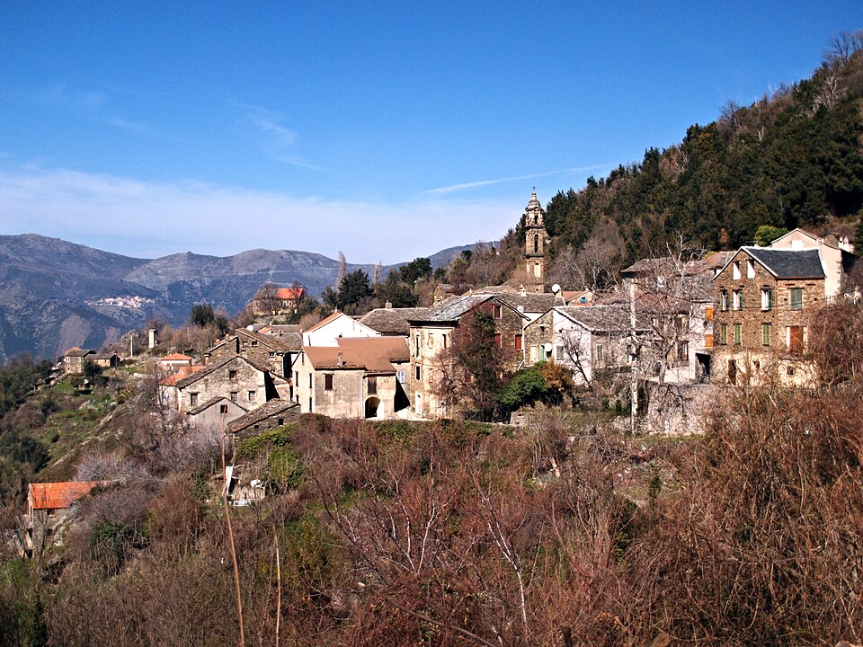

Castello-di-Rostino földrajzi elhelyezkedése miatt évszázadokon át Korzika egyik legfontosabb katonai és védelmi ellenőrző pontja volt. A meredek hegygerincre épült település és annak egykori erődítménye tökéletes rálátást biztosított a Golo folyó völgyére, amely a sziget belsejébe, Corte felé vezető legfőbb stratégiai útvonalat jelentette. Aki uralta ezeket a magaslatokat, az ellenőrzése alatt tarthatta a Bastia és a belső területek közötti teljes áru- és csapatmozgást. A vár és a falu masszív kőfalai a középkortól kezdve a helyi feudális urak, majd később a genovai hódítók elleni állandó védekezés bázisául szolgáltak.
A falu és a mikrorégió történelme elszakíthatatlanul összefonódott a korzikai szabadságvágy legtragikusabb fejezetével. A közvetlen közelben található a hírhedt Ponte Nuovu (Új Híd), ahol 1769 májusában Pasquale Paoli korzikai csapatai sorsfordító, véres csatát vívtak a XV. Lajos által küldött francia királyi hadsereggel. A túlerőben lévő hódítók itt mértek végső csapást a független korzikai köztársaságra. Castello-di-Rostino lakói és védői testközelből élték át a nemzet bukását: a csata után a francia csapatok megszállták és módszeresen meggyengítették a régió hegyi erődítményeit, köztük ezt a stratégiai pontot is, hogy örökre letörjék a helyiek ellenállását.
A falu történelmi örökségének egyik legértékesebb és legszebb ékköve a közelben található Église San Tumasgiu (Szent Tamás) kápolna romja. Ez az ősi, pisai-román stílusú egyházi épület a 11-12. századból származik, és letisztult, elegáns kőfaragásaival éles kontrasztot alkot a vadregényes, sziklás és erdős korzikai tájjal. Bár az idő vasfoga és a háborúk nem kímélték a komplexumot, a magányosan álló falak és a középkori építészet ezen letisztult formája ma is mélyen megrendítő, misztikus hangulatot áraszt, emlékeztetve az utazót a vidék gazdag középkori kulturális és vallási virágzására.